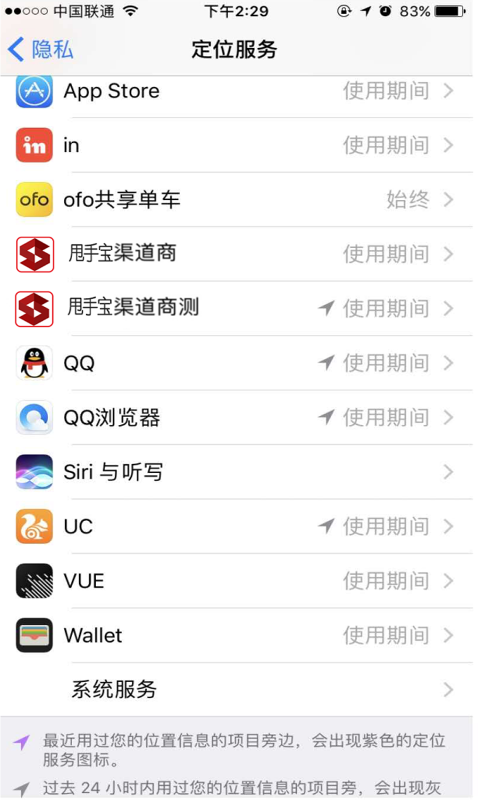

一、信号问题？
影响信号的原因：
1、运营商问题——场地附近的移动基站释放的信号弱或者不稳定、人流量大网络使用高峰期也会对信号造成影响。
2、天线问题——天线安装不严谨或者摆放位置不合理造成信号接收较弱。
3、设备放置场地——设备放在楼层较低并且周围有高层建筑物遮挡的屋子里可能会影响信号。
4、设备故障——设备出现供电电压不够或者WIFI程序乱跑，导致联网不稳定。
处理办法：
1、重启设备，并检查天线是否接好或者有没有拧紧，注意天线摆放的最好是放机器顶部，不要被遮挡或者覆盖。
2、手机关机3G、4G，检查一下场地的2G网络是否正常；如果场地的移动2G信号不稳定，请检测场地的联通信号如何，如果联通信号稳定可以更换插卡版的装联通卡；如果联通信号也不好，可以加装信号放大器或者采用WIFI方式。
3、如因供电不足导致设备离线，请更换功率更大的电源。
二、怎么扫码支付？
渠道商账户（即商家账户），绑定设备并添加完产品模板成功后，用户扫描设备上的二维码进行支付；
三、如何查看总收益？
四、提现问题？
1、每次申请提现，金额需超过10元；
2、每天最多只能申请提现1次；
3、一般在提现申请1-3个工作日内到账，如超过3个工作日未到账请联系甩手宝客服；
4、可提现至微信、支付宝、银行卡帐号；
5、提现手续费按照微信、支付宝、银行卡费率扣除6%。
五、提现手续费说明？
5-1：提现未到账（银行卡）
由于银行卡提现属于人工转账，提现申请提交后两个工作日内审核，审核通过后两个小时内打款，请留意银行卡到账情况（请确保填写的银行卡信息的准确性，否则将影响打款时效）。
5-2：手动提现问题：
1、“系统繁忙中，请30分钟后重试”：系统繁忙，需要30分钟左右后重试。
2、“当前收款微信号日收款已超微信日限额”：微信限制每个微信号日收款不能超过2万元，可以通过缩短提现时间来解决。
3、“真实姓名不一致”：微信检测到绑定微信零钱包时候所填写的姓名与该微信号验证的姓名不一致，需要到商家后台绑定微信零钱包的地方重新填写姓名。
4、“已达今日提现次数上限”：提现次数超过微信所限制的100次。
5、“操作过于频繁，请稍候再试”：点击“提现”按钮过于频繁，稍后再试。
6、“微信未实名认证”：个人微信号未实名认证，微信限制打款。
7、“结算失败（申请提现中）”：您有一笔银行卡提现处于待审核中，需要等审核通过了才能提现下一笔款。
六、如何绑定设备？
在客户端首页底部点击“扫码绑定”即可扫面设备二维码绑定成功；
注：设备二维码来源：（即购买甩手宝扫码支付模块时，厂家会提供一个设备二维码）
七、如何提现认证？
在客户端-我的页面右上角点击“提现认证”按钮，在提现认证页面，输入相应信息后，即可申请提现；
八、如何设置设备模版？
两种方式
1、未绑定设备前，可以在客户端首页-点击“产品模版”，在模版管理页面点击添加模版，在添加模版页面-可以选择产品模版类型输入相应模版信息等；
2、已绑定设备，可以在绑定设备成功后选择其中一个模版使用或在原模版的基础上编辑后使用，同样可以在选择模版页面新增一个新的模版信息；
九、为什么相机不能用？
第一次打开应用如果拒绝相机时，会导致无法使用拍照功能；
开启操作：甩手宝用户可以在手机设置列表-点击隐私-点击相册，找到甩手宝渠道商应用后，开启相机；
十、为什么定位不能用？
第一次打开应用如果定位访问时，会导致无法使用定位访问；
开启操作：甩手宝用户可以在手机设置列表-点击隐私-点击定位，找到甩手宝渠道商应用后，开启定位服务；

十一、已绑定设备的渠道商帐号（即商家账号）如果将该设备绑定至其他商家里边？
1、在渠道商首页-点击设备管理，在设备管理页面长按设备-点击“解绑设备”-需要绑定设备的商家可用在渠道商首页扫码进行绑定；